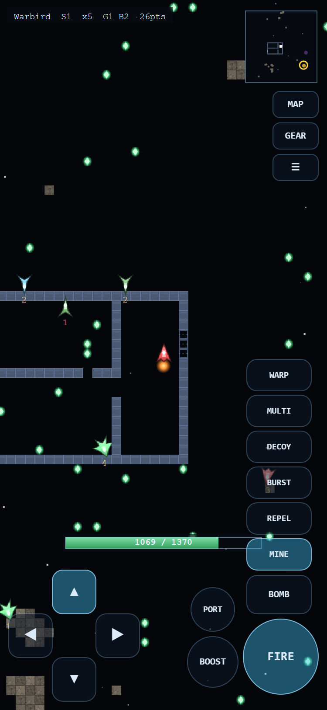
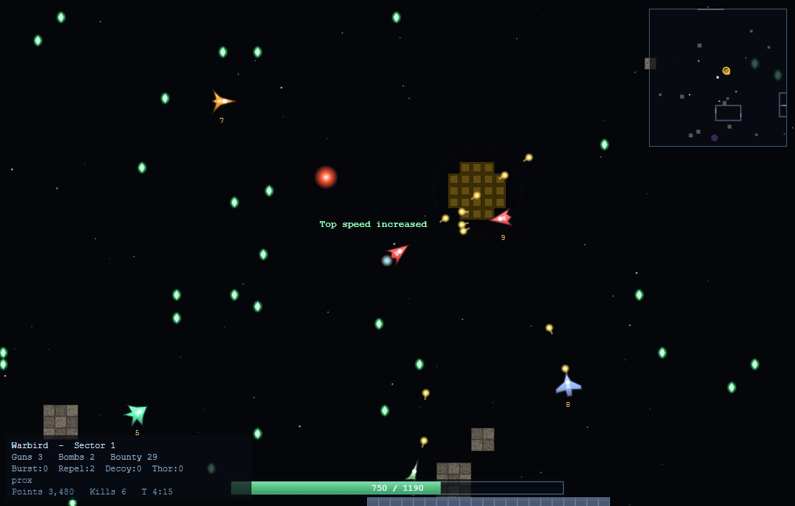

5SPACE
A 1997 space shooter with a roguelike underneath it. Twenty-six sectors down, take the Prime Flag, fly it back out. Dying is permanent.

The bottom of the chain. The Flag is the easy half — you still have twenty-six sectors to fly back up, and carrying it makes every one of them come looking for you.
PLAYRuns in the browser, on a desktop or a phone. Nothing to install, no account, works offline. It saves as you fly.
What you are getting into
You fly one ship, in real time, with momentum. There is no braking — only thrusting the other way. Space is mostly empty, dotted with asteroid fields and hard-walled bases, and everything else out there is another pilot in one of the same eight ships you chose from.
Underneath that is a roguelike. Each sector is generated when you first enter it and kept exactly as you left it. Your ship gets stronger by collecting prizes whose contents you cannot see until you take them. And when you die, that run is over — there is no respawn and the save is deleted.
The one thing to understand before you launch: your energy bar is your health, your ammunition and your afterburner, all at once, out of a single pool that recharges on its own. Every shot you fire is health you have decided not to have. Running your bar down to nothing in a firefight is how most runs end.
Your first three minutes
- Get a feel for the drift. Hold
Upto thrust, and notice that letting go does not slow you down. Turning withLeftandRightchanges where you are pointing, not where you are going. Being able to fly backwards while still facing an enemy is the whole skill of this game. - Collect the green diamonds. They are everywhere in open space. Each one gives you something — a faster recharge, a better gun, a new ability — and a few take something away. Sector 1 is thinly defended on purpose; farm it.
- Check what you have built. Press
Ifor the ship readout. It shows how far each of your handling numbers has come from the factory hull towards its ceiling, and what gear you are carrying. - Find the gold ring. That is the warp portal down. The corner radar shows it
once you have swept that part of the map; hold
Altfor the whole sector. - Go down when you are ready, not when you find it. Nothing rushes you. A sector you have stripped of prizes is worth more than one you arrived in early.
Controls
These are SubSpace's original bindings, key for key. WASD works alongside
the arrows and Space alongside Ctrl, if that suits your hands
better.
Flying
Shooting
Gear
Information
On a phone or tablet
Touch controls appear automatically — there is nothing to switch on. Two thumb zones, and you can hold everything in both at once.

1 2 3 4 5 6 7 8 9- Turn and thrust. Left and right rotate; up thrusts, down reverses. You can slide a thumb straight from turning onto thrust without lifting it.
- FIRE. Hold it. It sits under your right thumb, and holding it alongside turning and boosting is the normal way to fly.
- BOMB. One tap, one bomb.
- BOOST. The afterburner. Faster, and it eats the same energy your guns use.
- PORT. Drops a portal beacon here, and warps you back to it later. On a narrow screen it sits above BOOST instead of beside it.
- MINE sits directly above BOMB — the two things you leave behind you, in the same column, in every layout.
- The utility ladder — REPEL, BURST, DECOY, MULTI, WARP, climbing from MINE in that order. These are the ones you reach for while something is already on top of you, so they are on the pad rather than behind GEAR. Held sideways they move to the bottom edge instead, as small circles running left from PORT in the same order — a landscape phone has no height for a ladder but a whole empty strip along the bottom. WARP is not PORT: PORT drops a beacon you can come back to, WARP throws you somewhere random at least thirty tiles away.
- MAP, GEAR and the menu. MAP shows the whole sector while held. GEAR still opens the full command set, including everything on the ladder. ☰ pauses into the menu. On a phone held sideways these move to the top left, because the right-hand edge is spoken for.
- Energy. In portrait it rides above the controls; turn the phone sideways and it drops to the bottom between your thumbs.
Turn the device sideways. Portrait works, but landscape shows you roughly twice as much of what is coming at you, and in this game that is most of staying alive.
What you are looking at
A real frame, mid-fight in sector 1, in a Warbird that has been collecting.

1 2 3 4 5 6 7- Your ship. Always at the centre — the camera is locked to you and the sector scrolls past. The flame behind it means the engine is lit; it is pointing where it will shoot, which is not necessarily where it is going.
- Energy. Health, ammunition and afterburner from one pool. It refills on its own. Everything you do is spent from here, and at zero you are gone.
- An enemy pilot, flying one of the same eight ships you had to choose from. The number underneath is its bounty — how much it has collected, so how dangerous it is and how much it is worth.
- A prize. Every one looks identical; you find out what it was after you take it. Most help, some do not, and the deeper you go the more of the second kind there are.
- The way down. A gold ring marks the warp portal to the next sector. A blue one marks the way back up.
- Radar. Terrain appears once your sweep has covered it and stays drawn. Contacts are live and range-limited — a stealthed ship is not on it at all. Hold Alt for the whole sector.
- Ship readout. Hull and sector, gun and bomb level, bounty, the stock of every limited-use item, and which abilities the prizes have given you.
Everything else you will meet out there:
| On screen | Meaning |
|---|---|
| blue ring | the warp portal back up. In sector 1 it is the way out |
| green pad | a safe zone. Nothing can hurt you and you recharge three times as fast — but a timer throws you out after twenty-five seconds |
| purple well | a wormhole. It pulls you in, faster and faster, then throws you somewhere else in the sector |
| grey plating | a base. The best prizes are inside, behind doors that open and shut on a timer, guarded by pilots stationed there |
| blue grid | an energy screen. You can fly through it; shots cannot pass |
| drifting hull | a derelict. Fly into it and it breaks open into a burst of prizes |
| brown rock | an asteroid field. Solid, and you bounce off it with a speed penalty |
Choosing a difficulty
It is the first thing the game asks you, and the title screen shows which mode is selected so you can change it with d before starting anything. It is not a damage slider — it is which of this game's two ancestors is in charge of dying.
| Mode | |
|---|---|
| Easy | A wing of five hulls, and plenty to shoot at. SubSpace's own answer: lose one and you lose every prize it had collected and drop the Prime Flag back into the Core — but the run continues. The early sectors are busier than Normal, not emptier, so you get fights straight away — but the pilots are much softer, start closer, only notice you from short range so they come at you a couple at a time instead of all at once, and take half the damage to destroy. More prizes and fewer bad ones. Scores count for half. |
| Normal | One hull, one run. The roguelike answer, and the game as designed. Dying ends it and deletes the save. |
If you have not flown anything like this before, take Easy for a run or two. Losing a fully built hull in sector 19 still hurts enough to teach you the same lessons.
Choosing a ship
Your hull is the whole character sheet and it is fixed for the run. What changes is what the prizes build on top of it. If it is your first run, take the Warbird.
| Hull | |
|---|---|
| Warbird | The duelist. Heavy guns, a punishing bomb, and enough energy to trade shots. Straightforward and forgiving — the one to learn on. |
| Javelin | A bomb rack with an engine bolted on. Fast, agile, lethal at range, and made of paper. |
| Spider | Recharges faster than anything else in the sky. Small pool, weak bombs, but it can still be firing when everything else is dry. |
| Leviathan | A capital ship. Enormous energy, a bomb that clears a room, and the turning circle of a continent. |
| Terrier | Support. Portals, bursts and repels, excellent recharge, and almost no ability to hurt anything. |
| Weasel | Cloak, stealth, and the fastest hull in the game. Everything else about it is a liability. |
| Lancaster | Bouncing bullets from launch, a decent bomb, mines, and no weakness sharp enough to name. |
| Shark | Mines and repels. It cannot win a straight fight, so it makes sure there are no straight fights. |
The run
- The goal. Sector 26 holds the Prime Flag in a sealed vault with a very large thing guarding it. Take it, then climb all twenty-six sectors back up and leave through the blue portal in sector 1.
- Carrying it makes the whole chain hostile. Reinforcements start hunting you every few seconds instead of every few minutes. The way out is a fighting retreat, and that is the point.
- Prizes are unidentified. Every one looks the same. Deeper sectors
have more negative ones.
\shows the log of what you have opened, which is how you learn the odds. - You can never be prized below the ship you launched in. A negative prize costs you an upgrade, never the hull. A run can stall; it cannot spiral.
- It saves constantly — every twenty seconds, on every sector change, and whenever you close the tab. Reopening offers Continue. You can also export a run to a file and import it on another machine.
- Death is final on Normal. It deletes the save and writes a line in the local score table. On Easy it costs you a hull and everything that hull had collected, which is penalty enough to be worth avoiding.
Three things that will kill you
- Firing until you are empty. An enemy with a full bar and a bomb kills you at any range. Break off at half energy, not at a quarter.
- Flying in a straight line. Ships fire along one of forty fixed headings, and shots carry the shooter's own speed, so a predictable target is an easy one and an unpredictable one is genuinely hard to hit. Keep turning.
- Corridors. Inside a base a bomb has nowhere to miss, and a Lancaster's bouncing bullets will find you around a corner. Fight in the open unless the prizes are worth it.